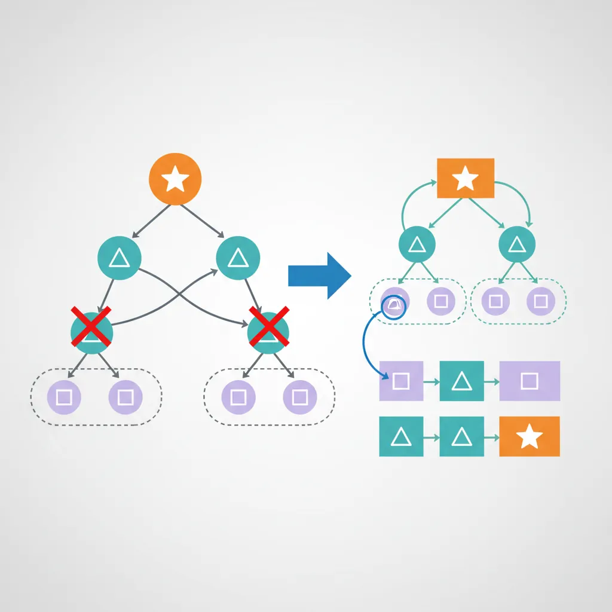

1. Problem and Motivation
Dynamic Programming (DP) solves problems by breaking them into overlapping subproblems, storing solutions to avoid recomputation. It is essential whenever a recursive solution re-derives the same answer many times because the recursion tree revisits identical inputs.
The danger with DP is learning it as a list of named problems — "this looks like a Knapsack problem" — without a method for problems that do not match a known name. This lesson focuses on the method, not the catalog. The single running example, Fibonacci, is deliberately simple: it is small enough that every step of the design process can be checked by hand, which is exactly what makes it a good teaching tool for the process itself.
2. Prerequisites
This lesson assumes two things from earlier in the series, and builds on both directly:
- Recursion Complete Guide (Part 2) — DP begins as recursion. You need to already be comfortable with base cases, recursive calls, and the call stack before adding memoization on top of them.
- Algorithm Analysis: Correctness, Complexity & Invariants — reasoning about recurrences and $O$/$\Theta$ growth is how you explain why naive recursion is slow and why memoization or tabulation fixes it.
3. DP Characteristics

DP Characteristics
- Optimal Substructure: Optimal solution contains optimal solutions to subproblems
- Overlapping Subproblems: Same subproblems solved multiple times
- Memoization: Top-down approach with caching
- Tabulation: Bottom-up approach building solution iteratively
flowchart TD
A["Optimization Problem"] --> B{"Overlapping
subproblems?"}
B -->|"Yes"| C{"Optimal
substructure?"}
B -->|"No"| D{"Greedy choice
property?"}
C -->|"Yes"| E["Dynamic Programming"]
C -->|"No"| F["Backtracking / Brute Force"]
D -->|"Yes"| G["Greedy Algorithm"]
D -->|"No"| F
E --> E1["Top-down: Memoization"]
E --> E2["Bottom-up: Tabulation"]
G --> G1["Make locally optimal
choice at each step"]
F --> F1["Explore all possibilities
with pruning"]
4. Fibonacci: A Worked Example
Fibonacci is the smallest example that shows both hallmarks from the box above: computing fib(5) needs fib(4) and fib(3), but fib(4) also needs fib(3) — the same subproblem, recomputed. The four versions below take the same recursive idea and progressively remove that waste.
5. How to Design a DP Solution
The four Fibonacci functions above did not appear by accident. Each one falls out of the same six-step process. Read the steps once in the abstract, then watch each one applied to the Fibonacci example you just saw — the same problem, no new example needed.
Step 1: Identify Overlapping Subproblems and Optimal Substructure
Before writing any DP code, confirm the problem actually qualifies. Draw (or imagine) the recursion tree for the naive solution and ask: does it call the same subproblem more than once? For Fibonacci, fib(n) = fib(n-1) + fib(n-2) means the call to fib(n-1) internally needs fib(n-2) again — the exact subproblem the top-level call already needed directly. Expand the tree three or four levels and the redundancy compounds: fib(2) alone gets recomputed independently inside almost every branch. That redundancy is what makes the naive recursion $O(2^n)$, and it is also the signal that caching results (memoization) or building them bottom-up (tabulation) will help. Optimal substructure holds too: the correct value of fib(n) is built purely from the correct values of fib(n-1) and fib(n-2) — there is no scenario where a "slightly wrong" subproblem answer would still combine into a correct final answer.
Step 2: Define the State Precisely
This is the step most solutions skip, and skipping it is where most DP bugs come from. Before writing a recurrence, write one sentence that says exactly what dp[i] means. For Fibonacci: dp[i] = the i-th Fibonacci number. Not "the answer so far," not "some running total" — a specific, checkable quantity. If you cannot state the meaning of dp[i] in one unambiguous sentence, you are not ready to write the recurrence, because the recurrence is just an equation about that meaning.
Step 3: Derive the Recurrence from the State Definition
The recurrence should not be something you recall from memory — it should fall out of the state definition in Step 2. Fibonacci's own definition says the i-th Fibonacci number is the sum of the (i-1)-th and (i-2)-th Fibonacci numbers. Since dp[i] was defined in Step 2 to be the i-th Fibonacci number, and dp[i-1] and dp[i-2] were defined to be the (i-1)-th and (i-2)-th Fibonacci numbers, substituting the state definition directly into the problem's definition gives:
$$dp[i] = dp[i-1] + dp[i-2]$$
Nothing was invented here — the recurrence is a restatement of what dp[i] already meant, applied to what dp[i-1] and dp[i-2] already meant. This is the general move: once the state is defined precisely, ask "what earlier states does the problem's own definition say this state depends on?" and the recurrence is the answer.
Step 4: Identify Base Cases
A recurrence describes how to get from earlier states to later ones, but it never terminates on its own — it needs a floor to stand on. For Fibonacci, that floor is dp[0] = 0 and dp[1] = 1. Both must be present and both must be correct: dp[i] for every i >= 2 is computed only in terms of earlier dp values, so an error in dp[0] or dp[1] does not stay isolated — it propagates through dp[2], then dp[3], and every value after that. Unlike a crash or an exception, a wrong base case usually still produces a number that looks plausible, so the bug can hide for a long time. Before trusting any recurrence, explicitly check: have all the base cases the recurrence can bottom out at been covered, and are they right?
Step 5: Choose Memoization vs. Tabulation
Both approaches implement the exact same recurrence from Step 3; they differ only in direction and mechanism.
- Memoization (top-down) starts from the recursive solution you already have — from Step 1's naive
fib_recursive— and adds a cache: ifnis already inmemo, return it; otherwise compute it once and store it. This is the smallest possible edit to working recursive code, which is its main advantage. Its cost is call-stack overhead: every uncached call is still a real function call, and for largenthat stack depth can overflow. - Tabulation (bottom-up) fills an array in a loop, from the base cases upward, so that by the time
dp[i]is computed,dp[i-1]anddp[i-2]already sit in the array. This requires figuring out a valid fill order — for Fibonacci that order is simply "increasingi," but for two-dimensional DP (grids, strings) choosing an order in which every dependency is already computed is a real design decision. In exchange, tabulation avoids recursion entirely: no call stack, and usually better cache locality since it walks memory linearly.
Neither is universally "better." Memoization is faster to write when you already have working recursion and n is not huge; tabulation is preferable when recursion depth is a real risk or when the loop structure is simple to see.
Step 6: Optimize Space If Only a Fixed Window of States Is Needed
Look at the recurrence again: dp[i] only ever depends on dp[i-1] and dp[i-2]. Once dp[i] has been computed, dp[i-3] and everything before it will never be read again. That means the full array in fib_tabulation is more memory than the computation actually needs — only the last two values matter at any moment. The fib_optimized function shown in Section 4 makes this concrete: it replaces the whole dp array with two variables, prev2 and prev1, dropping space from $O(n)$ to $O(1)$ while computing exactly the same values in exactly the same order. The general principle: if a recurrence only ever reaches back a fixed window of k prior states, an array of size k (or k plain variables) is enough — you do not need to remember states the recurrence has already outgrown.
6. Reconstructing the Solution, Not Just the Value
Fibonacci only ever asks for a number, so every version above returns a number and stops. But plenty of DP problems ask a different question: not just "what is the optimal value?" but "what sequence of choices produced it?" Which coins were used to make change with the fewest coins? Which characters form the longest common subsequence? Which items were placed in the knapsack?
The technique for answering that is a small addition to everything above: alongside the dp table, keep a second table that records which choice produced each dp entry — a parent pointer, or the specific decision taken. Once both tables are filled, start at the final state and walk the choice table backward, one step at a time, collecting the choices along the way, then reverse that collected list to read it in forward order.
dp[state] = best value achievable at state
choice[state] = the decision (or prior state) that produced dp[state]
# after dp and choice are fully filled:
decisions = []
state = final_state
while state is not a base case:
decisions.append(choice[state])
state = state_before(choice[state])
reverse(decisions)
# decisions now lists, in order, what was chosen to reach the optimumNothing here changes the recurrence itself — choice[state] is just a byproduct recorded at the same moment dp[state] is computed, whenever there was a decision (which coin, which item, which prior string position) to record. You will use this exact technique when reconstructing an LCS or a Coin Change solution in Core DP Patterns, where the "which choice" question is the whole point of the problem.
7. Exercises and Mastery
Easy
Climbing Stairs: you can climb 1 or 2 steps at a time; count the number of distinct ways to reach step n. Trace all six steps of the methodology in words — do not write code. State the overlapping subproblems, define dp[i] precisely (it should read like "the number of ways to reach step i"), derive the recurrence from that definition (the last step taken to reach i was either a 1-step from i-1 or a 2-step from i-2, so the ways from each are added), give the base cases, and note that the recurrence you land on is identical in shape to Fibonacci's. The full coded solution lives in Core DP Patterns.
Medium
Minimum Coins to Make an Amount: given coin denominations and a target amount, find the minimum number of coins needed (or report it is impossible). Again, conceptual only — no code. Define dp[a] as the minimum number of coins needed to make amount a. Derive the recurrence: for each coin c that is not larger than a, using that coin last means the rest was made optimally as dp[a-c], so dp[a] = 1 + min(dp[a-c]) over every valid coin c, provided dp[a-c] is itself reachable. State the base case dp[0] = 0 and how an unreachable amount should be represented. The full coded solution, including how coin choices are reconstructed, lives in Core DP Patterns.
Hard
N-th Tribonacci Number: each term is the sum of the three preceding terms instead of two, with base cases T(0) = 0, T(1) = 1, T(2) = 1. It is the same six-step process as Fibonacci, extended by one term.
def tribonacci_tabulation(n):
"""
Bottom-up tabulation - O(n) time, O(n) space
dp[i] = the i-th Tribonacci number
dp[i] = dp[i-1] + dp[i-2] + dp[i-3]
"""
if n == 0:
return 0
if n <= 2:
return 1
dp = [0] * (n + 1)
dp[1], dp[2] = 1, 1
for i in range(3, n + 1):
dp[i] = dp[i-1] + dp[i-2] + dp[i-3]
return dp[n]
def tribonacci_optimized(n):
"""
Space-optimized - O(n) time, O(1) space
Only the last three states are ever needed.
"""
if n == 0:
return 0
if n <= 2:
return 1
t0, t1, t2 = 0, 1, 1
for _ in range(3, n + 1):
t0, t1, t2 = t1, t2, t0 + t1 + t2
return t2
# Compare
n = 25
print(f"Tribonacci({n}):")
print(f" Tabulation: {tribonacci_tabulation(n)}")
print(f" Optimized: {tribonacci_optimized(n)}")
dp[state], derive the recurrence from that definition alone, nail down every base case, justify memoization or tabulation for this specific problem's constraints, and check whether space can be reduced to a fixed window. Only after finishing all six steps should you check whether the problem matches a known pattern.Review rhythm: tomorrow, redo the six steps for Fibonacci from memory, with no notes; next week, redo them for Climbing Stairs and Tribonacci; several weeks later, apply the same six steps to a brand-new problem before opening Core DP Patterns, and compare your derivation to the one given there. Finally, teach someone the difference between "I recognized this as a Knapsack problem" and "I derived this recurrence from a precise state definition" — the second is the skill this lesson is teaching.
8. Summary Cheat Sheet
- Confirm the problem has overlapping subproblems and optimal substructure before reaching for DP.
- Define
dp[state]with one precise, checkable sentence before writing any recurrence. - Derive the recurrence directly from that state definition — it should not need to be memorized separately.
- Enumerate every base case and verify each one is correct; base-case errors propagate silently.
- Choose memoization when adapting existing recursion is cheapest; choose tabulation when recursion depth or a clear fill order matters more.
- Reduce space to a fixed window of recent states whenever the recurrence never reaches further back than that.